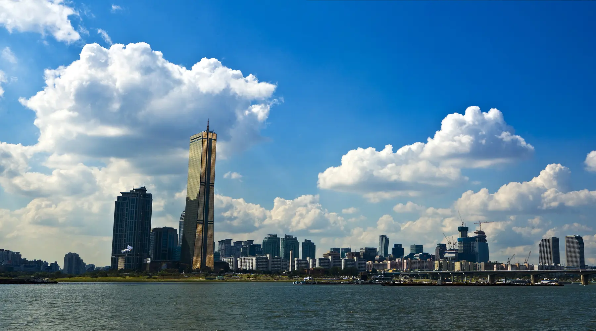

A full Seoul week
A complete 7-day Seoul itinerary
A full week makes room for Seoul's different centers. This route moves from royal neighborhoods to independent northwest streets, design districts, museums and the modern city south of the river.
- 7 neighborhood days
- Rain alternatives
- First-visit friendly

Route logic
How this 7-day route holds together
The first five days build the historic, central, northwest, creative and museum sides of the city. Gangnam and Jamsil receive separate days because being south of the river does not make them one compact district.
Do not interpret seven days as permission to fill every evening. Seoul's distances, stairs and summer or winter weather make deliberate recovery time part of a better itinerary.
Day by day
Your 7-day Seoul plan
Day 1: Royal Seoul, moving east
Start with the palace district, then move through adjacent historic neighborhoods instead of leaving Jongno between stops.
Gwanghwamun and Gyeongbokgung
Begin at Gwanghwamun Square and enter the palace near opening time. Gyeongbokgung normally closes on Tuesdays, so confirm the operating calendar before fixing this day.
Seochon
Exit toward the west side for lunch in Seochon. Keeping lunch outside the palace gates prevents an unnecessary subway trip.
Insadong and nearby cultural lanes
Travel east once, then browse craft shops, galleries and tea houses around Insadong at an unhurried pace.
Ikseon-dong or Cheonggyecheon
Finish in Ikseon-dong for dinner. If energy remains, add a short Cheonggyecheon walk rather than another attraction across town.
Route: Gwanghwamun → Gyeongbokgung → Seochon → Insadong → Ikseon-dong
Rain fallback: Use the National Palace Museum as the morning anchor, spend longer in Insadong's indoor spaces and keep the outdoor lanes brief.
Day 2: Markets, central Seoul and the skyline
This day climbs gradually from a central market toward Myeongdong and Namsan, with no need to cross the river.
Namdaemun Market
Arrive before the busiest part of the day, browse with a specific snack or meal in mind and avoid treating every aisle as mandatory.
Myeongdong
Walk or take one short transit hop to Myeongdong for lunch, shopping and a flexible indoor break.
Namsan approach
Choose the cable car, bus or a walking route according to weather and mobility. The objective is the skyline—not exhausting the group before sunset.
N Seoul Tower area or Euljiro
Stay for the view when visibility is good. In poor conditions, return to central Seoul for dinner around Euljiro instead.
Route: Namdaemun → Myeongdong → Namsan → central Seoul dinner
Rain fallback: Use Myeongdong and central department stores as indoor anchors; keep Namsan only if the cloud ceiling and visibility improve.
Day 3: Northwest Seoul without the backtrack
Give the northwest its own day so independent shops, a neighborhood market and Hongdae's evening energy connect naturally.
Yeonnam-dong
Start with coffee and a walk near Gyeongui Line Forest Park while the neighborhood is still relatively calm.
Mangwon Market
Move west for a food-focused market lunch. Choose a few items deliberately instead of queueing for every popular stall.
Mangwon and the neighborhood streets
Browse small shops or pause in a cafe. A river detour is optional and should depend on weather and walking energy.
Hongdae
Return toward Hongdae for dinner, live music, shopping or nightlife. Ending here avoids a late cross-city transfer between attractions.
Route: Yeonnam-dong → Gyeongui Line Forest Park → Mangwon Market → Hongdae
Rain fallback: Build the day around cafes, object shops, galleries and the covered market, then shorten the park section.
Day 4: Design Seoul with breathing room
Pair Seongsu's retail and cafe streets with nearby green space so the day is more than a sequence of shops.
Seoul Forest
Use the cooler, quieter part of the day for the park. Choose one loop rather than trying to cover every section.
Seongsu
Walk into Seongsu for lunch and select a compact cluster of cafes, design stores or current pop-ups.
Seongsu design streets
Leave room for discoveries, but set a stopping point; pop-up queues can consume the afternoon without improving the trip.
Ttukseom or Seongsu dinner
Add the river only in comfortable weather. Otherwise stay in Seongsu for dinner and an easy return.
Route: Seoul Forest → Seongsu streets → optional Ttukseom Hangang Park
Rain fallback: Reverse the emphasis: make indoor design spaces and cafes the main plan, with a short park window between showers.
Day 5: Korean art, modern culture and an easy evening
A museum-first day moves north toward Hannam and Itaewon instead of mixing Yongsan with a distant palace or market.
National Museum of Korea
Give the permanent collection a clear time limit and choose priority galleries. General admission is free, while some special exhibitions charge separately.
Yongsan or Ichon
Eat nearby before changing districts. This keeps the museum visit from being squeezed between two long transfers.
Hannam-dong or a second museum
Choose Hannam's galleries and shops or another museum—not both unless the group genuinely wants a museum-heavy day.
Itaewon
Finish with dinner in Itaewon. The area provides variety without requiring another major transfer at the end of the day.
Route: National Museum of Korea → Yongsan/Ichon → Hannam-dong → Itaewon
Rain fallback: This is already one of the strongest rain days. Give more time to the museums and reduce hillside walking around Hannam.
Day 6: Modern Gangnam, kept in one district
Treat Gangnam as a complete south-of-the-river day rather than a single photo stop inserted into a northern Seoul itinerary.
Bongeunsa Temple
Begin outside before the commercial district becomes busy. Keep voices low and remember that this remains an active religious site.
COEX
Cross into COEX for lunch and a weather-proof midday block.
Starfield Library and Samseong
See the library, shops or aquarium according to interest. Pick one paid indoor attraction rather than stacking several.
Gangnam dinner
Move west only for dinner or nightlife. Avoid adding Jamsil simply because it is also south of the river.
Route: Bongeunsa → COEX → Starfield Library → Gangnam evening
Rain fallback: Use COEX as the day's spine and visit Bongeunsa during the clearest short window.
Day 7: Lake, high-rise Seoul and a slower finish
End the week with a self-contained eastern district that works in both clear and poor weather.
Seokchon Lake
Walk one section of the lake rather than both loops. Seasonal crowds can make a short circuit the better choice.
Songridan-gil
Have lunch east of the lake, where cafes and restaurants make it easy to slow the pace.
Lotte World Mall
Use the mall, aquarium or shopping as the main indoor block. Choose according to budget and reserve time where required.
Seoul Sky area
Use the observatory only when visibility justifies the cost. Otherwise finish with dinner and the lake after dark.
Route: Seokchon Lake → Songridan-gil → Lotte World Mall → optional Seoul Sky
Rain fallback: Center the day on the mall, aquarium and indoor attractions; keep the lake walk short or skip it entirely.
Make it fit
Useful adjustments
Add a day trip
Replace either Gangnam or Jamsil instead of squeezing a day trip between them.
Split stay
Use three or four nights centrally and the remainder near Hongdae only if luggage movement is worth the saved transfers.
Recovery day
Turn Jamsil or Seongsu into a late-start day with one outdoor walk and one indoor anchor.
Check before traveling
Verify current details
Operating days, reservations, temporary closures, events and visibility change. Confirm the relevant details directly before committing money or reorganizing a day.
Compare trip lengths
More Seoul itinerary guides
Choose the guide that matches the number of full days actually available in the city.
Seoul essentials
A practical two-day Seoul itinerary grouping Gyeongbokgung, Insadong, Namdaemun, Myeongdong and Namsan into two efficient central days.
See the route → 3 daysFirst-trip balance
A neighborhood-clustered three-day Seoul itinerary covering royal Seoul, Myeongdong and Namsan, plus Hongdae, Yeonnam and Mangwon.
See the route → 5 daysOld and new Seoul
A realistic five-day Seoul itinerary with the historic core, Namsan, Hongdae, Seongsu, Seoul Forest, Yongsan museums and Itaewon.
See the route → 7 daysThe complete city week
A seven-day Seoul itinerary covering Jongno, Myeongdong, Hongdae, Seongsu, Yongsan, Gangnam and Jamsil without inefficient cross-city days.
Current guide